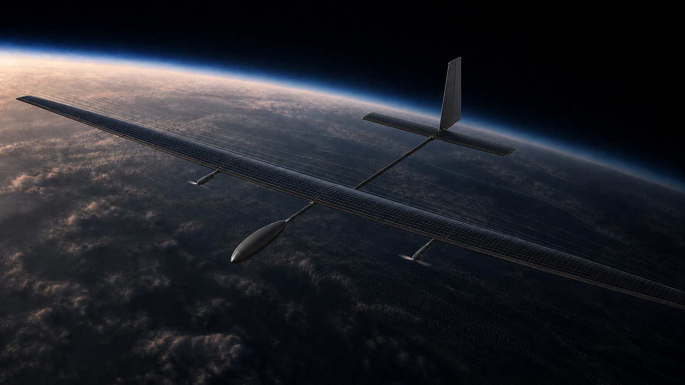
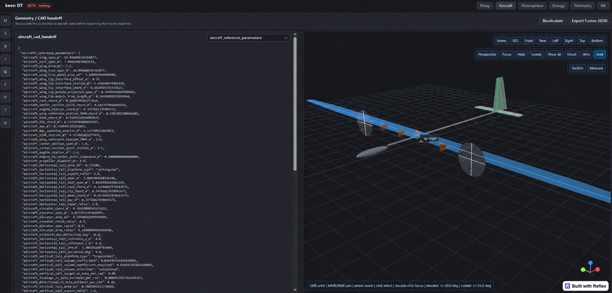

Persistent
Designed to remain on station and keep research data moving beyond a short aircraft sortie.

keenori / AURA programme
AURA is being developed to operate at 16–22 km and remain on station using solar energy. Its first mission: make research and data relay for IoT and autonomous systems faster to deploy, locally controlled and accessible beyond fixed infrastructure.
02 / The aircraft
AURA operates at altitudes of 16–22 km with a radio horizon of up to 560 km. The system's practical coverage area is approximately 180 km in diameter. Unlike a satellite, AURA can remain on station over a defined geographic area for extended periods and maintain communications with terrestrial, airborne and maritime users.
03 / Why keep an aircraft there?
Satellites provide enormous reach, but they are not always the right infrastructure for a local mission. A high-altitude aircraft adds a deployable layer: persistent research and data relay centred on the region that needs it.
Designed to remain on station and keep research data moving beyond a short aircraft sortie.
Coverage can be positioned over a region without first building an extensive ground network.
A dedicated aircraft can become an operator-controlled network for IoT and autonomous systems.
One aircraft can be a data relay. Several aircraft can become an accessible private regional network.
04 / How we are building it
keen DT is our engineering environment for aircraft geometry, parameters, aerodynamic analysis and design iteration. It connects research to the configuration we can actually build.

In-house aerodynamics
The wing profile was developed specifically for AURA's low-Reynolds-number operating conditions. At the 22 km cruise point, the complete wing reaches the required lift within 0.79%, while calculated total drag is 12.29% below the design allowance.
Engineering workflow
Coverage, persistence and operating altitude defined.
Reference geometry, mass logic and architecture established.
Aerodynamics, stability, energy and operating points under verification.
Structures, systems integration and production-level CAD.
Ground testing, flight testing and model correlation.
05 / Where this can go
We see high-altitude solar aircraft as a new layer between terrestrial infrastructure and satellites — deployable where persistent coverage, accessible data and local control matter.
06 / keenori
Keenori is an independent engineering R&D company in Ukraine. We are developing a high-altitude solar aircraft and the digital tools behind it to make persistent research and data relay practical, deployable and more accessible.
Founder
Founder & Chief Systems Engineer